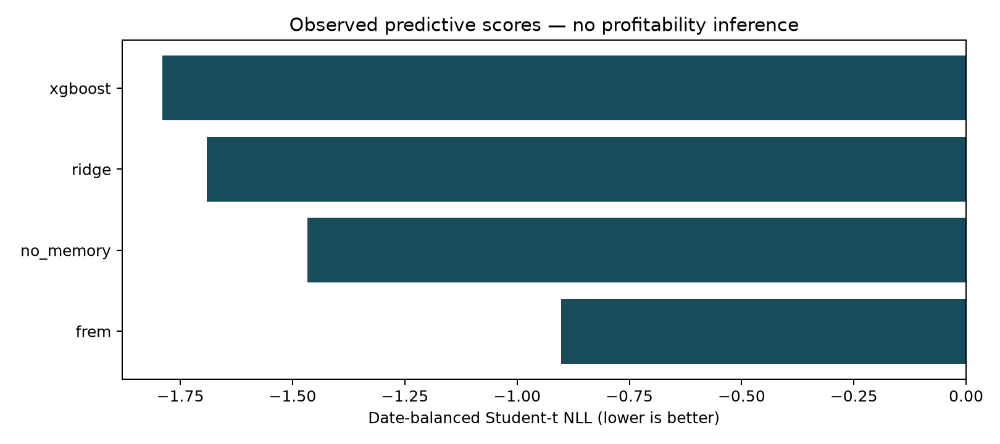

Phase: development. Run: 20261011T110103Z_a65733448e.
Every method and configured seed uses matching outcomes, label availability and execution timestamps. Repeated observations are averaged within an asset and UTC date before assets and dates are weighted equally.
Seed standard deviation describes optimizer variability; it is not a confidence interval across independent financial histories. Use the paired date-block analysis and the declared complete multiplicity family for inference.

| model | mean_nll | seed_sd | seeds | decision_dates |
|---|---|---|---|---|
| xgboost | -1.790440 | 0.0 | 1 | 92 |
| ridge | -1.691472 | 0.0 | 1 | 92 |
| no_memory | -1.466289 | 0.0 | 1 | 92 |
| frem | -0.901362 | 0.0 | 1 | 92 |
Source SHA-256: 90d00a2d24dd605c2b73cd47f47d19e999d9627c094c1baacad785cda13babf7.
Raw forecasts, exact configurations, retained failures, training records and prediction-file hashes remain in the experiment directory. No strategy-return plot is made without an explicit realizable portfolio ledger.